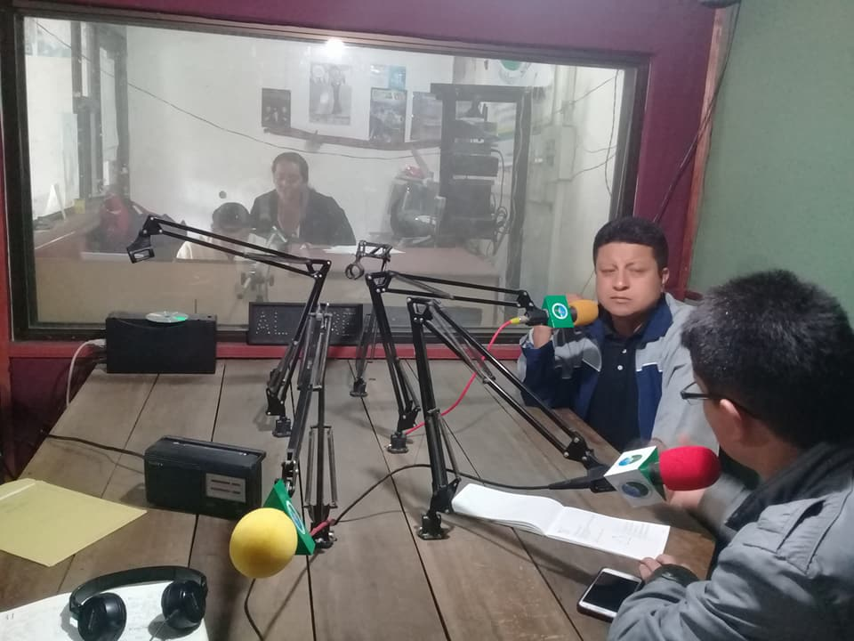
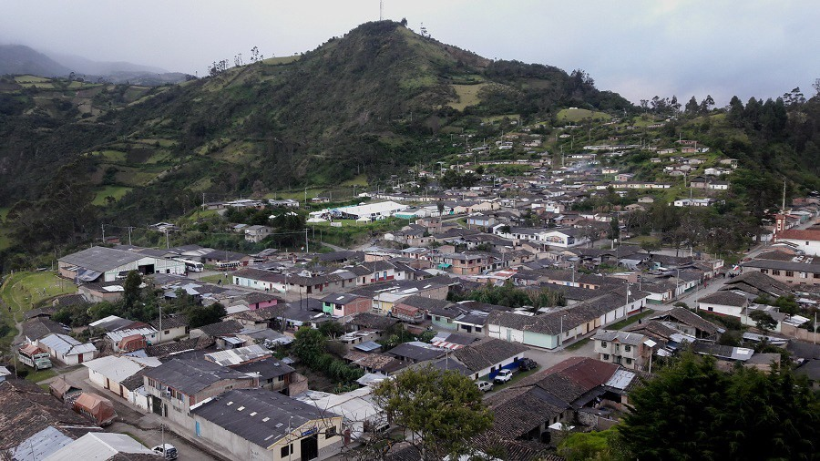
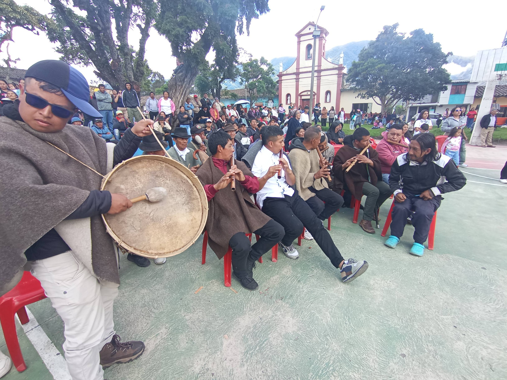

Programación cultural, informativa y comunitaria desde el sur del Cauca. Comunicación propia, identidad y territorio al servicio de la comunidad del Resguardo de Rioblanco y del Pueblo Yanacona.
La Fundación Radio Comunitaria Yanacona es una emisora comunitaria ubicada en el Resguardo de Rioblanco, municipio de Sotará, Cauca. Es un espacio de aprendizaje colectivo para fortalecer la organización propia, defender el territorio y acompañar a la comunidad con información, educación y música variada.
Ser un medio de comunicación al servicio de las autoridades y procesos del Pueblo Yanacona, promoviendo la palabra, la participación y la educación propia en todo el macizo colombiano.
Consolidarnos como referente de radio comunitaria, fortaleciendo la identidad cultural, el cuidado de la Madre Tierra y la articulación con otras organizaciones del territorio.
Identidad, solidaridad, participación, respeto por la naturaleza y defensa del territorio guían cada programa y proyecto de la emisora.
RCY ofrece una programación variada pensada para complacer el gusto de sus oyentes.
Trabajamos articuladamente con autoridades ancestrales, organizaciones del Pueblo Yanacona y otras radios comunitarias para fortalecer la comunicación al servicio de la comunidad.
Imágenes del territorio, las actividades comunitarias y la vida alrededor de la radio.



“La radio nos mantiene informados y conectados con nuestras raíces en el territorio.” – Oyente del resguardo
“RCY es un espacio para que la voz del Pueblo Yanacona se escuche en todo el macizo.” – Integrante de la comunidad
Si quieres comunicarte con la Radio Comunitaria Yanacona, proponer contenidos o coordinar alianzas, completa el siguiente formulario o escríbenos por WhatsApp.
Ubicación
Resguardo de Rioblanco, Municipio de Sotará, Departamento del Cauca, Colombia.
WhatsApp Comunitario
+57 320 676 0215